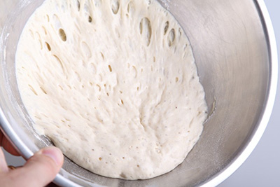
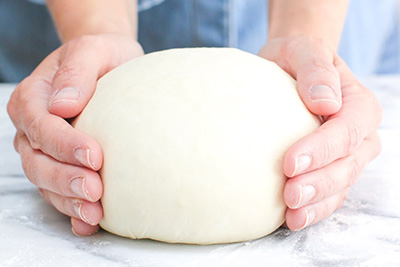
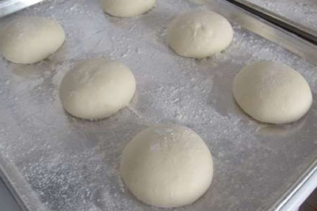
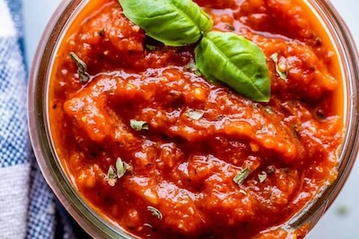
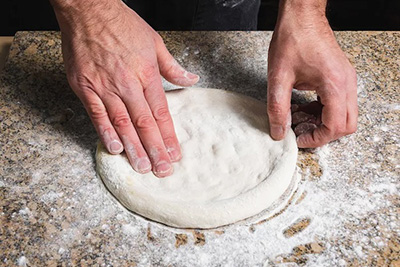
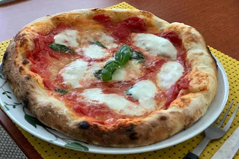

Mix together 200 g water, 5 g honey,
and 10 g fresh yeast. Then add and mix in 200 g Tipo 0 flour.
Leave in fridge for 16-24 hours with a cover.

Take out the poolish. Leave it 1 hour at room temperature. Then add
500 g
Tipo 0 flour. Mix in
300
water and 20 g of salt. A little at a time.
Do some slap and folds. Let rest for 15 minutes.
Put a little oil on your hands and fold the dough into one large ball.
Add a little oil on top, tap, tap. Cover with a dish towel. Rest for one hour.

Make 3 balls. Put a little oil on your hands. Fold the dough into itself. Close it in. Leave the balls
on a sheet of baking paper, 4 fingers appart. Add a little oil on top, tap, tap. Cover with plastic foil
and let it rest and raise for 1-2 hours.

Pour the tomatoes into a bowl and mash them with your hands. Add salt.
Cut the mozarella into straight chuncks. Not too small, not too large. Prepare some basil leaves to put
on top.

Roll each dough ball in flour, place it on a floured surface.
Press it down, pinch it in the middle and outwards to press air to the circumference. Press, pull,
rotate until you
have a nice round shape. Add tomato sauce, cheese chunks, a little basil, drip some virgin olive oil on
top. In particular on the basil leaves. Slide in oven and bake for 5-6 minutes at max temperature.
Preferably on a steel og stone plate.

When the pizza is done: take it out, add a little parmesan on top, a little
extra
basil, and a little extra virgin oil. Slice it. Serve it. Enjoy it. Bon apetite.